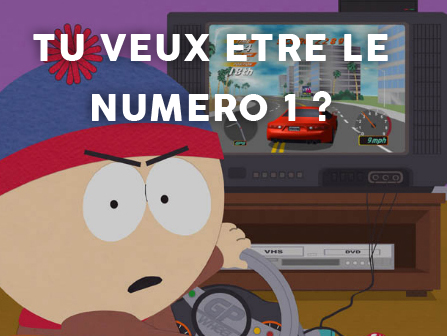
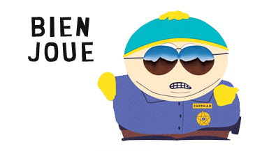

South Park : Blindtest

-
1/ Dans quel episode entend-on "Quand un ami, un jour s'en va" ?
-
2/ Quel episode est le theatre de la chanson du Dawg ?
-
3/ Dans quel episode les enfants chantent-ils "Californie" ?
-
4/ Quel episode voit apparaitre la fantastique chanson "Poker Face" interpretee par Eric Cartman sur Guitar Hero ?
-
5/ Dans quel episode entend-on la chanson de Token qui chante sa solitude ?

Ton score est de sur 5!
Envie de continuer a jouer avec South Park ? Allez retrouver les moments forts de la serie !
Voir le calendrier